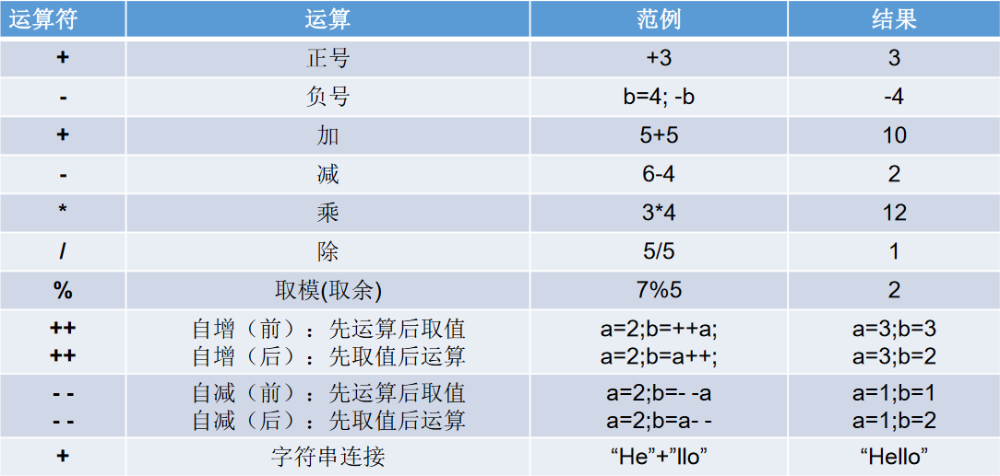
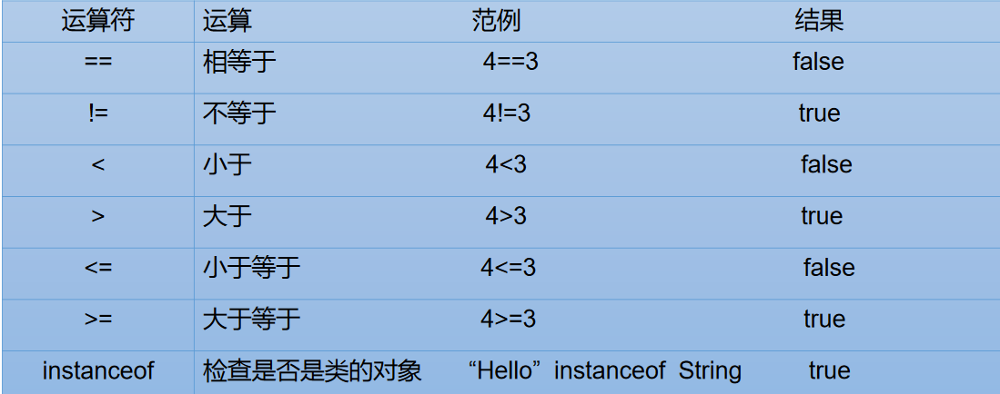
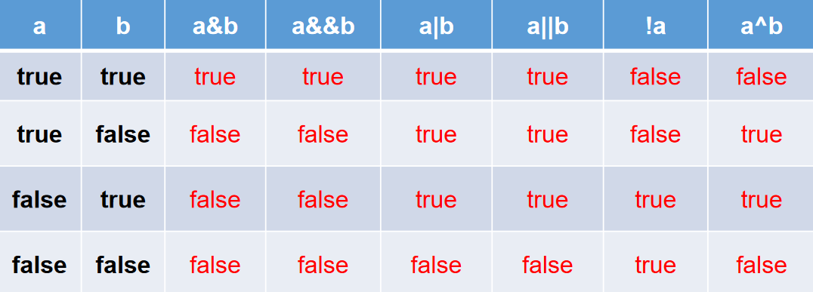
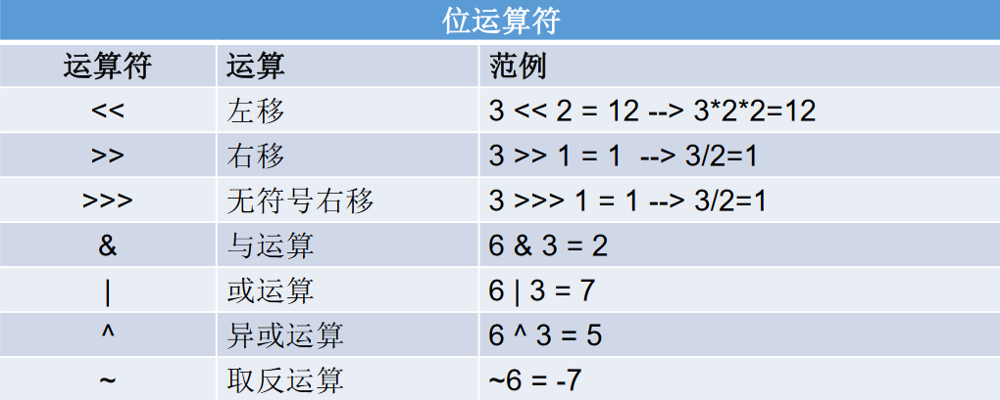
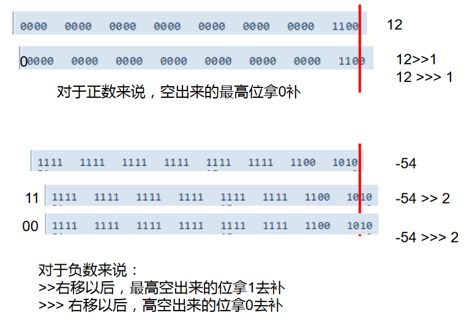
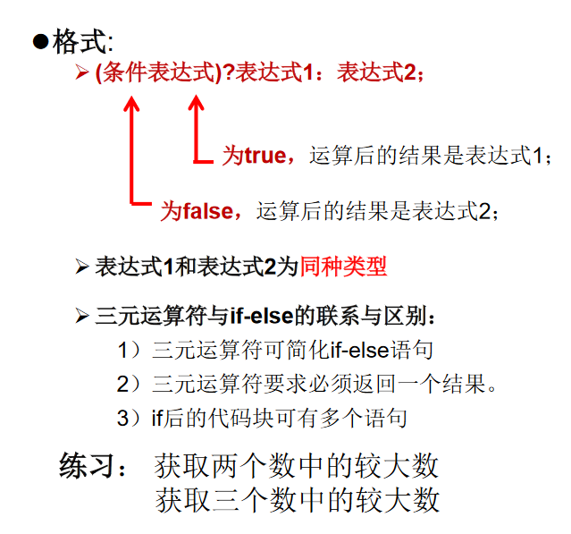
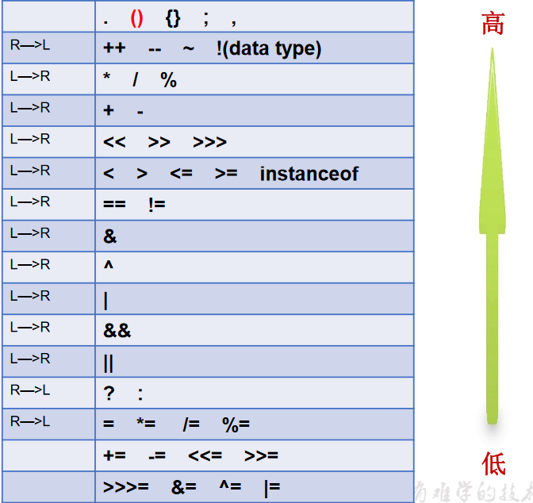

# 01、运算符
运算符是一种特殊的符号，用以表示数据的运算、赋值和比较等。
- 算术运算符
- 赋值运算符
- 比较运算符（关系运算符）
- 逻辑运算符
- 位运算符
- 三元运算符
# 1.1、算术运算符

/* | |
运算符之一：算术运算符 | |
+ - * / % (前)++ (后)++ (前)-- (后)-- | |
*/ | |
class Day3Test{ | |
public static void main(String[] args) { | |
// 除号：/ | |
int num1 = 12; | |
int num2 = 5; | |
int resule1 = num1 / num2; | |
System.out.println(resule1); //2 | |
int result2 = num1 / num2 * num2; | |
System.out.println(result2); | |
double result3 = num1 / num2; | |
System.out.println(result3); //2.0 | |
double result4 = num1 / num2 + 0.0; //2.0 | |
double result5 = num1 / (num2 + 0.0); //2.4 | |
double result6 = (double)num1 / num2; //2.4 | |
double result7 = (double)(num1 / num2); //2.0 | |
System.out.println(result5); | |
System.out.println(result6); | |
// %：取余运算 | |
// 结果的符号与被模数的符号相同 | |
int m1 = 12; | |
int n1 = 5; | |
System.out.println("m1 % n1 = " + m1 % n1); | |
int m2 = -12; | |
int n2 = 5; | |
System.out.println("m2 % n2 = " + m2 % n2); | |
int m3 = 12; | |
int n3 = -5; | |
System.out.println("m3 % n3 = " + m3 % n3); | |
int m4 = -12; | |
int n4 = -5; | |
System.out.println("m4 % n4 = " + m4 % n4); | |
//(前)++ : 先自增 1，后运算 | |
//(后)++ ：先运算，后自增 1 | |
int a1 = 10; | |
int b1 = ++a1; | |
System.out.println("a1 = " + a1 + ",b1 = " + b1); | |
int a2 = 10; | |
int b2 = a2++; | |
System.out.println("a2 = " + a2 + ",b2 = " + b2); | |
int a3 = 10; | |
a3++; //a3++; | |
int b3 = a3; | |
// 注意点： | |
short s1 = 10; | |
//s1 = s1 + 1; // 编译失败 | |
// s1 = (short)(s1 + 1); // 正确的 | |
s1++; // 自增 1 不会改变本身变量的数据类型 | |
System.out.println(s1); | |
// 问题： | |
byte bb1 = 127; | |
bb1++; | |
System.out.println("bb1 = " + bb1); | |
//(前)-- : 先自减 1，后运算 | |
//(后)-- ：先运算，后自减 1 | |
int a4 = 10; | |
int b4 = a4--; //int b4 = --a4; | |
System.out.println("a4 = " + a4 + ",b4 = " + b4); | |
} | |
} |
算术运算符的注意问题
- 如果对负数取模，可以把模数负号忽略不记，如：5%-2=1。但被模数是负数则不可忽略。此外，取模运算的结果不一定总是整数。
- 对于除号 “/”，它的整数除和小数除是有区别的：整数之间做除法时，只保留整数部分而舍弃小数部分。例如：x=3510;x=x/1000*1000; x 的结果是？
- “+” 除字符串相加功能外，还能把非字符串转换成字符串。例如：
System.out.println(“5+5=”+5+5);// 打印结果是？5+5=55 ?
/* | |
练习：随意给出一个三位数的整数，打印显是它的个位数，十位数，百位数的值。 | |
格式如下： | |
数字 xxx 的情况如下： | |
个位数： | |
十位数： | |
百位数： | |
例如： | |
数字 153 的情况如下： | |
个位数：3 | |
十位数：5 | |
百位数：1 | |
*/ | |
class AriExer{ | |
public static void main(String[] args){ | |
int num = 187; | |
System.out.println("百位数：" + num/100); | |
System.out.println("十位数：" + num%100/10); | |
System.out.println("个位数：" + num%10); | |
} | |
} |
# 1.2、赋值运算符
符号：
=- 当 “=” 两侧数据类型不一致时，可以使用自动类型转换或使用强制类型转换原则进行处理。
- 支持连续赋值。
扩展赋值运算符：
+=, -=, *=, /=, %=
/* | |
运算符之二：赋值运算符 | |
+= -= *= /= | |
*/ | |
class SetValueTest{ | |
public static void main(String[] args) { | |
// 赋值符号：= | |
int i1 = 10; | |
int j1 = 10; | |
int i2,j2; | |
// 连续赋值 | |
i2 = j2 = 10; | |
int i3 = 10,j3 = 20; | |
//*********************** | |
int num1 = 10; | |
num1 += 2; //num1 = num1 + 2; | |
System.out.println(num1); //12 | |
int num2 = 12; | |
num2 %= 5; //num2 = num2 % 5; | |
System.out.println(num2); | |
short s1 = 10; | |
//s1 = s1 + 2; // 编译失败 | |
s1 += 2; // 结论：不会改变变量本身的数据类型 | |
System.out.println(s1); | |
// 开发中，如果希望变量实现 + 2 的操作，有几种方法？？？(int num = 10) | |
// 方式一：num = num + 2; | |
// 方式二：num += 2;(推荐) | |
// 开发中，如果希望变量实现 + 1 的操作，有几种方法？？？(int num = 10) | |
// 方式一：num = num + 1; | |
// 方式二：num += 1; | |
// 方式三：num++;(推荐) | |
} | |
} | |
class MkFan{ | |
public static void main(String[] args) { | |
// 练习 1： | |
int i = 1; | |
i *= 0.1; | |
System.out.println(i);// | |
i++; | |
System.out.println(i);// | |
// 练习 2： | |
int m = 2; | |
int n1 = 3; | |
n1 *= m++; | |
System.out.println("m=" + m); //3 | |
System.out.println("n1=" + n1); //6 | |
// 练习 3： | |
int n = 10; | |
n += (n++) + (++n); | |
System.out.println(n); //32 | |
} | |
} |
# 1.3、比较运算符

- 比较运算符的结果都是
boolean型，也就是要么是 true，要么是 false。 - 比较运算符 “
==” 不能误写成 “=” 。
/* | |
运算符之三：比较运算符 | |
== != > < >= <= instanceof | |
结论： | |
1. 比较运算符的结果是 boolean 类型 | |
2. 区分 == 和 = | |
*/ | |
class CompareTest{ | |
public static void main(String[] args){ | |
int i = 10; | |
int j = 20; | |
System.out.println(i==j); //false | |
System.out.println(i = j); //20 | |
boolean b1 = true; | |
boolean b2 = false; | |
System.out.println(b2 == b1); //false | |
System.out.println(b2 = b1); //true | |
} | |
} |
# 1.4、逻辑运算符
&— 逻辑与|— 逻辑或！— 逻辑非&&— 短路与||— 短路或^— 逻辑异或

逻辑运算符用于连接布尔型表达式，在 Java 中不可以写成 3<x<6，应该写成 x>3 & x<6 。
“&”和“&&”的区别：- 单
&时，左边无论真假，右边都进行运算； - 双
&时，如果左边为真，右边参与运算，如果左边为假，那么右边不参与运算。
- 单
“
|” 和 “||” 的区别同理，||表示：当左边为真，右边不参与运算。异或 (
^) 与或 (|) 的不同之处是：当左右都为 true 时，结果为 false。理解：异或，追求的是 “异”!
练习
/* | |
运算符之四：逻辑运算符 | |
& && | || ！ ^ | |
说明： | |
1. 逻辑与运算符操作的都是 boolean 类型的变量 | |
*/ | |
class LogicTest{ | |
public static void main(String[] args){ | |
// 区分 & amp; 与 && | |
// 相同点 1：& 与 && 的运算结果都相同 | |
// 相同点 2：当符号左边是 true 时，二者都会执行符号右边的运算 | |
// 不同点：当符号左边是 false 时，& 继续执行符号 | |
// 开发中，推荐使用 & amp;& | |
boolean b1 = false; | |
int num1 = 10; | |
if(b1 & (num1++ > 0)){ | |
System.out.println("我现在在南京"); | |
}else{ | |
System.out.println("我现在在北京"); | |
} | |
System.out.println("num1 = " + num1); | |
boolean b2 = false; | |
int num2 = 10; | |
if(b2 && (num2++ > 0)){ | |
System.out.println("我现在在南京"); | |
}else{ | |
System.out.println("我现在在北京"); | |
} | |
System.out.println("num2 = " + num2); | |
// 区分：| 与 || | |
// 相同点 1：| 与 || 的运算结果都相同 | |
// 相同点 2：当符号左边是 false 时，二者都会执行符号右边的运算 | |
// 不同点 3：当符号左边是 true 时，| 继续执行符号右边的运算，而 || 不再执行符号右边的运算 | |
// 开发中，推荐使用 || | |
boolean b3 = true; | |
int num3 = 10; | |
if(b3 | (num3++ > 0)){ | |
System.out.println("我现在在南京"); | |
}else{ | |
System.out.println("我现在在北京"); | |
} | |
System.out.println("num3 = " + num3); | |
boolean b4 = true; | |
int num4 = 10; | |
if(b4 || (num4++ > 0)){ | |
System.out.println("我现在在南京"); | |
}else{ | |
System.out.println("我现在在北京"); | |
} | |
System.out.println("num4 = " + num4); | |
} | |
} | |
class LogoinTest{ | |
public static void main(String[] args){ | |
boolean x = true; | |
boolean y = false; | |
short z = 42; | |
//if(y == true) | |
if((z++==42)&&(y=true))z++; | |
if((x=false)||(++z==45)) z++; | |
System.out.println("z=" + z); //46 | |
} | |
} |
# 1.5、位运算符
1、位运算是直接对整数的二进制进行的运算

2、注意：无 <<<
/* | |
运算符之五：位运算符 (了解) | |
结论： | |
1. 位运算符操作的都是整型的数据变量 | |
2.<< : 在一定范围内，每向左移一位，相当于 * 2 | |
>> : 在一定范围内，每向右移一位，相当于 / 2 | |
面试题：最高效的计算 2 * 8 ？ 2 << 3 或 8 << 1 | |
*/ | |
class BitTest{ | |
public static void main(String[] args){ | |
int i = 21; | |
// i = -21; | |
System.out.println("i << 2 :" + (i << 2)); | |
System.out.println("i << 3 :" + (i << 3)); | |
System.out.println("i << 20 :" + (i << 20)); | |
System.out.println("i << 27 :" + (i << 27)); | |
int m = 12; | |
int n = 5; | |
System.out.println("m & n :" + (m & n)); | |
System.out.println("m & n :" + (m | n)); | |
System.out.println("m & n :" + (m ^ n)); | |
// 练习：交换两个变量的值 | |
int num1 = 10; | |
int num2 = 20; | |
// 方式一： | |
// int tent = num1; | |
// num1 = num2; | |
// num2 = tent; | |
// 方式二： | |
// 好处：不用定义临时变量 | |
// 弊端：①相加可能超出存储范围 ② 有局限性：只适用于数值类型 | |
// num1 = num1 + num2; | |
// num2 = num1 - num2; | |
// num1 = num1 - num2; | |
// 方式三：使用位运算 | |
num1 = num1 ^ num2; | |
num2 = num1 ^ num2; | |
num1 = num1 ^ num2; | |
System.out.println("num1 = " + num1 + ",num2 = " + num2); | |
} | |
} |


class BitTest{ | |
public static void main(String[] args){ | |
// 练习：交换两个变量的值 | |
int num1 = 10; | |
int num2 = 20; | |
// 方式一： | |
// int tent = num1; | |
// num1 = num2; | |
// num2 = tent; | |
// 方式二： | |
// 好处：不用定义临时变量 | |
// 弊端：①相加可能超出存储范围 ② 有局限性：只适用于数值类型 | |
// num1 = num1 + num2; | |
// num2 = num1 - num2; | |
// num1 = num1 - num2; | |
// 方式三：使用位运算 | |
num1 = num1 ^ num2; | |
num2 = num1 ^ num2; | |
num1 = num1 ^ num2; | |
System.out.println("num1 = " + num1 + ",num2 = " + num2); | |
} | |
} |
# 1.6、三元运算符

/* | |
运算符之六：三元运算符 | |
1. 结构：(条件表达式)？表达式 1 : 表达式 2 | |
2. 说明 | |
① 条件表达式的结果为 boolean 类型 | |
② 根据条件表达式真或假，决定执行表达式 1，还是表达式 2. | |
如果表达式为 true, 则执行表达式 1 | |
如果表达式为 false, 则执行表达式 2 | |
③ 表达式 1 和表达式 2 要求是一致的。 | |
④ 三元运算符是可以嵌套的 | |
3. 凡是可以使用三元运算的地方，都是可以改写 if-else。 | |
反之，则不一定成立！！！ | |
*/ | |
class SanTest{ | |
public static void main(String[] args) { | |
// 获取两个整数的最大值 | |
int m = 12; | |
int n = 5; | |
int max = (m > n)? m : n; | |
System.out.println(max); | |
double num = (m > n) ? 2 : 1.0; | |
//(m> n) ? 2 : "n 大"; // 编译错误 | |
//**************************************** | |
String str = (m > n) ? "m大" : ((m == n)? "m和n相等" : "n大"); | |
System.out.println(str); | |
//**************************************** | |
// 获取三个数中的最大值 | |
int n1 = 12; | |
int n2 = 30; | |
int n3 = -43; | |
int max1 = (n1 > n2) ? n1 : n2; | |
int max2 = (max1 > n3) ? max1 : n3; | |
System.out.println("三个数中的最大值是：" + max2); | |
// 此方法：pass | |
int max3 = (((n1 > n2)? n1 : n2) > n3) ?((n1 > n2) ? n1 : n2) : n3; | |
System.out.println("三个数中的最大值是：" + max3); | |
// 改写成 if-else | |
if(m > n){ | |
System.out.println(m); | |
}else{ | |
System.out.println(n); | |
} | |
} | |
} |
# 02、运算符的优先级
- 运算符有不同的优先级，所谓优先级就是表达式运算中的运算顺序。如右表，上一行运算符总优先于下一行。
- 只有单目运算符、三元运算符、赋值运算符是从右向左运算的。
